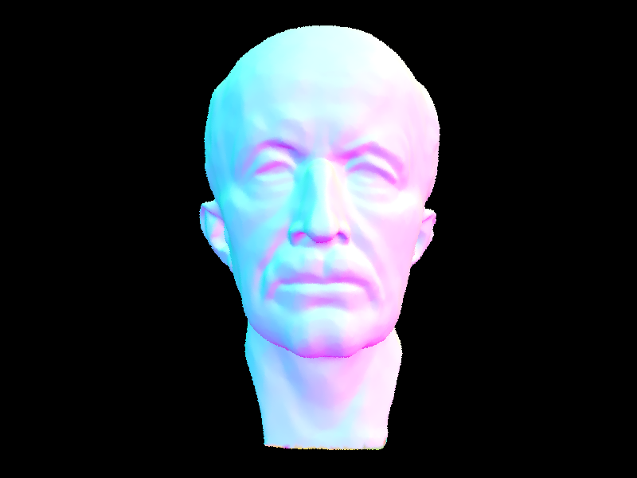
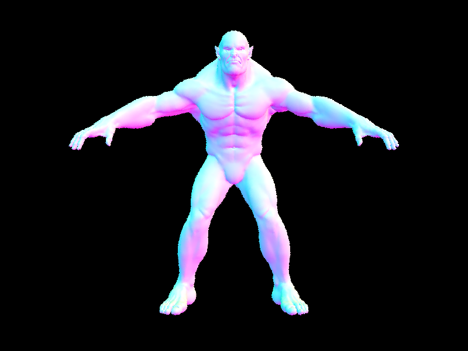

Making our renderer go brrrrr
Before implementing rendering acceleration with a BVH, our pathtracer used a naive algorithm wherein every ray would be checked against every Primitive in the scene, leading to a very slow $O(nm)$ runtime with $n$ primitives and $m$ rays. To speed this up, we used a BVH constructed with the median heuristic. We sorted the list of Primitives based on the longest axis of the bounding box, and then used the median as the split point. Another heuristic we implemented was the midpoint heuristic, but both produced approximately equal results from our testing, so we kept the simplicity of the median approach to avoid the edge case of creating an empty node. To construct a BVH, we performed the following algorithm:
- Generate a
BVHNodecontaining all of the primitives. - If the list of
Primitives passed is has less elements thanmax_leaf_size, return aBVHNodecontaining all of thePrimitives. - Otherwise, compute the size of the bounding box of the
BVHNode, and choose the maximal axis. - Sort the list of
Primitives based on their position in the maximal axis, and split into two equal lists. - Set the
l(eft) member of theBVHNodeto aBVHNodeconstructed from the first half of the list, and ther(ight) member to be aBVHNodeconstructed from the second half of the list.
Comparing Rendering Times
Below, we compare output times of rendering the (really cute) Cow with and without BVH acceleration:
[PathTracer] Input scene file: .../dae/meshedit/cow.dae [PathTracer] Input scene file: .../dae/meshedit/cow.dae
[PathTracer] Rendering using 8 threads [PathTracer] Rendering using 8 threads
[PathTracer] Collecting primitives... Done! (0.0006 sec) [PathTracer] Collecting primitives... Done! (0.0005 sec)
[PathTracer] Building BVH from 5856 primitives... Done! (0.0000 sec) [PathTracer] Building BVH from 5856 primitives... Done! (0.0086 sec)
[PathTracer] Rendering... 100%! (21.9912s) [PathTracer] Rendering... 100%! (0.1567s)
[PathTracer] BVH traced 477573 rays. [PathTracer] BVH traced 299751 rays.
[PathTracer] Average speed 0.0217 million rays per second. [PathTracer] Average speed 1.9127 million rays per second.
[PathTracer] Averaged 805.142177 intersection tests per ray. [PathTracer] Averaged 8.660702 intersection tests per ray.
[PathTracer] Saving to file: cow.png... Done! [PathTracer] Saving to file: cow.png... Done!
[PathTracer] Job completed. [PathTracer] Job completed.
Notice how adding in the BVH reduced the render time from 21.9 seconds to 0.156 seconds — a dramatic speedup. (and really satisfying to run) Below is another example, using the teapot:
[PathTracer] Input scene file: .../dae/meshedit/cow.dae [PathTracer] Input scene file: .../dae/meshedit/teapot.dae
[PathTracer] Rendering using 8 threads [PathTracer] Rendering using 8 threads
[PathTracer] Collecting primitives... Done! (0.0006 sec) [PathTracer] Collecting primitives... Done! (0.0004 sec)
[PathTracer] Building BVH from 2464 primitives... Done! (0.0000 sec) [PathTracer] Building BVH from 5856 primitives... Done! (0.0030 sec)
[PathTracer] Rendering... 100%! (21.9912s) [PathTracer] Rendering... 100%! (0.1635s)
[PathTracer] BVH traced 477573 rays. [PathTracer] BVH traced 415430 rays.
[PathTracer] Average speed 0.0217 million rays per second. [PathTracer] Average speed 2.5407 million rays per second.
[PathTracer] Averaged 7.048304 intersection tests per ray. [PathTracer] Averaged 738.974202 intersection tests per ray.
[PathTracer] Saving to file: teapot.png... Done! [PathTracer] Saving to file: teapot.png... Done!
[PathTracer] Job completed. [PathTracer] Job completed.
In general, we found that the speedup is several orders of magnitude, likely due to the asymptotic speedup from $O(n)$ to $O(\log n)$ per ray. Additionally, this can be directly visualized by the average intersections per ray dropping to approximately 1% of the intersections computed per ray before implementing the BVH. Overall, we are very happy with the speedup presented by our implementation. More experimentation could be done on the various heuristics of generating BVHs to create a faster speedup.
Showcasing some speedily rendered complex models:


Relatively complicated .dae files generated with our BVH acceleration.